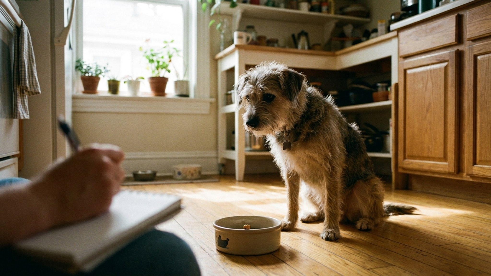

Пищевая аллергия у собаки: элиминационная диета, гидролизаты и как найти виновный ингредиент за 8 недель

31 мая 2026 · 10 минут чтения · Дерматология · Питание собак
Пищевая аллергия у собак — третья по частоте причина зуда после блошиного аллергического дерматита и атопии. По данным Veterinary Dermatology 2024, она встречается примерно у 10-15% собак с хронической кожной проблемой. Главная ошибка владельцев — ждать, пока само пройдёт, или менять корма без системы. Единственный способ точно определить виновный ингредиент — элиминационная диета по чёткому протоколу. Восемь недель строгости — и ответ у вас в руках.
🐾 Экономьте на лишних визитах к врачу
Сначала спросите AI-ветеринара в AnimaLife — часто этого достаточно, чтобы понять, нужен ли визит к врачу.
Спросить бесплатно → Спросить в MAX →
Пищевая аллергия vs пищевая непереносимость: в чём разница
Пищевая аллергия — иммунологическая реакция. Иммунная система воспринимает белок корма (чаще всего) как угрозу и запускает каскад воспаления. Нужна сенсибилизация: первый контакт — «запоминание», последующие — реакция. Именно поэтому аллергия часто развивается на корм, который собака ела годами.
Пищевая непереносимость — не иммунологическая. Организм не может переварить определённое вещество из-за ферментной недостаточности или прямого раздражения ЖКТ. Проявляется чаще расстройством пищеварения, а не кожными симптомами.
Различить их без диагностики сложно. На практике элиминационная диета используется для обоих случаев — она выявляет реакцию на конкретный ингредиент вне зависимости от механизма.
Как выглядит пищевая аллергия у собаки
Симптомы часто путают с другими дерматологическими проблемами. Характерная картина пищевой аллергии:
- Хронический зуд — лапы, морда, подмышки, паховая область, уши. Собака грызёт лапы, трёт морду, трясёт головой.
- Рецидивирующий отит — воспаление ушей, которое возвращается после лечения. Часто двустороннее.
- Гастроинтестинальные симптомы — встречаются в 30% случаев: рвота, мягкий стул, учащённая дефекация (более 3 раз в день).
- Вторичные инфекции — пиодерма (бактериальная), малассезия (дрожжевая инфекция кожи) на фоне постоянного расчёсывания.
- Симптомы круглый год — в отличие от атопии, пищевая аллергия не привязана к сезону.
Возраст дебюта — чаще всего до 1 года или после 5 лет. Породная предрасположенность: лабрадоры, голден-ретриверы, бульдоги, вест-хайленд-терьеры, боксёры, немецкие овчарки.
Главные аллергены у собак: цифры 2024
По метаанализу 2024 года (Gershoff & Mueller, Veterinary Dermatology), топ аллергенов для собак:
- Говядина — 34% случаев подтверждённой пищевой аллергии. Лидер по частоте.
- Молочные продукты — 17%.
- Курица — 15%.
- Пшеница — 13%.
- Ягнёнок — 5%. Долгое время считался гипоаллергенным — уже нет.
- Соя, яйцо, кукуруза — суммарно около 10%.
Аллергия на зерновые у собак встречается реже, чем принято считать. Маркетинговый тренд «безглютеновых» кормов не имеет доказательной базы для большинства собак с зудом. Белок — главный триггер, а не углеводы.
Протокол элиминационной диеты: 8 недель строгости
Элиминационная диета — золотой стандарт диагностики пищевой аллергии у собак. Суть: убрать все потенциальные аллергены и кормить только «новыми» белком и углеводом, с которыми собака никогда не сталкивалась.
Неделя 0 — подготовка:
- Исключить блох (пройти курс противопаразитарной обработки) — блошиный дерматит маскирует пищевую аллергию.
- Пролечить вторичные инфекции (если есть пиодерма или отит) — без этого оценить результат невозможно.
- Выбрать протокол: коммерческий гидролизованный корм или домашняя диета с новым белком.
Недели 1-8 — строгая диета:
- Только выбранный корм. Никаких лакомств, жевательных игрушек с запахом, ароматизированных препаратов (жевательные таблетки от блох — в форму таблетки), обработанных косточек.
- Флавор таблетки от паразитов заменить на нефлавор. Флавор — это куриный или говяжий белок.
- Все члены семьи должны знать протокол. Одна «добрая рука» с кусочком со стола сбивает эксперимент.
- 8 недель минимум — потому что IgE-опосредованная реакция уходит именно за этот срок. Менее 8 недель — ложноотрицательный результат.
Неделя 9 — провокация:
- Вернуть старый корм. Если симптомы возвращаются в течение 14 дней — диагноз подтверждён, исходный корм содержит аллерген.
- Вернуться на элиминационный корм до полного исчезновения симптомов.
Недели 10-18 — поиск конкретного аллергена:
- Вводить по одному ингредиенту на 2 недели, наблюдая за реакцией.
- Реакция есть — этот ингредиент исключить навсегда.
- Реакции нет — ингредиент безопасен, можно включать в постоянный рацион.
Гидролизованные корма: как выбрать
Гидролизованный белок — это белок, расщеплённый до фрагментов настолько мелких, что иммунная система их «не видит» и не атакует. Это делает гидролизаты идеальным вариантом для элиминационной диеты — не нужно искать экзотический белок.
Два типа коммерческих гипоаллергенных кормов:
- Гидролизованные — белок расщеплён. Примеры: Royal Canin Hypoallergenic, Hill's Prescription Diet z/d, Purina Pro Plan HA. Требуют назначения ветеринара, потому что это лечебные линейки.
- С новым белком (novel protein) — белок не гидролизован, но экзотический: кенгуру, крокодил, страус, оленина, насекомые. Примеры: Orijen Six Fish, Specific Novel Protein, Farmina N&D Single Protein. Подходят, если собака никогда не ела этот вид мяса.
Важно: «гипоаллергенный» на упаковке без рецепта — маркетинг. Только лечебные линейки прошли клинические испытания на аллергиков.
При выборе гидролизата убедитесь, что в составе нет «следов» других белков или «изготовлено на том же оборудовании, что и курица» — для сенсибилизированной собаки даже следы могут быть проблемой.
Домашняя диета для элиминации: когда и как
Домашняя диета даёт больший контроль над составом, но требует участия ветеринарного нутрициолога — иначе риск несбалансированности за 8+ недель. Стандартный вариант: один источник белка + один источник углеводов, которые собака никогда не ела.
Рабочие комбинации:
- Оленина + батат
- Кенгуру + тапиока
- Утка + гречка (если собака никогда не ела утку)
- Кролик + картофель
Не добавляйте бульоны, специи, растительные масла с незнакомым составом. Добавки (кальций, омега-3 в чистом виде) — только с одобрения ветеринара.
Частые ошибки при диагностике пищевой аллергии
- Менее 8 недель на диете. Самая частая причина ложноотрицательного результата. «Не помогло за месяц» — не вывод.
- Давать лакомства. Одно лакомство с куриным белком — и эксперимент начинается заново.
- Не лечить вторичные инфекции. Пиодерма или отит без лечения сами по себе дают зуд. Нельзя оценить результат диеты на фоне активной инфекции.
- Доверять аллерго-тестам крови или слюны. Тесты на пищевые аллергены у собак не имеют доказательной базы. Элиминационная диета — единственный валидный метод диагностики.
- Не проводить провокацию. Без возврата старого корма нельзя подтвердить диагноз. Улучшение могло произойти по другим причинам.
🐾 Всё о вашем питомце — в одном приложении
AI-ветеринар, дневник, напоминания о прививках и уходе. Установите AnimaLife — это бесплатно, в Telegram и MAX.
Открыть в Telegram → Открыть в MAX →
Как отличить пищевую аллергию от атопии и блошиного дерматита
Три самых частых причины хронического зуда у собак выглядят похоже, но требуют разного подхода. Ошибочная диагностика — частая проблема, из-за которой собаки годами получают неправильное лечение.
Блошиный аллергический дерматит (БАД):
- Зуд в зоне хвоста, крестца, живота, паховой области. «Хвостовая зона» — классика.
- Сезонность: хуже в тёплое время, но в тёплых квартирах может быть круглогодично.
- Достаточно одного укуса блохи для сильной реакции у аллергика.
- Диагностика: тщательный осмотр + исключение блох курсом акарицидных препаратов.
- Лечение: постоянная противопаразитарная обработка всех животных и помещения.
Атопический дерматит:
- Аллергия на вдыхаемые аллергены: пыльца, пылевые клещи, плесень.
- Выраженная сезонность (пыльца) или круглогодичная (клещи).
- Зуд морды, лап, подмышек, паха — похоже на пищевую аллергию.
- Диагностика: аллергологические тесты (внутрикожные пробы) у дерматолога.
- Лечение: иммунотерапия (АСИТ), апоквел, цитопоинт, стероиды.
Пищевая аллергия:
- Нет сезонности.
- Часто сопровождается ГИ-симптомами.
- Дебют в любом возрасте, часто у молодых (до года) или зрелых (5+) собак.
- Не отвечает на лечение антигистаминами (или отвечает слабо).
- Диагностика: только элиминационная диета.
Важно понимать: у одной собаки может быть сочетание всех трёх. Например, атопия + пищевая аллергия — это встречается у 25-30% собак с хронической кожной проблемой. В таком случае элиминационная диета снизит, но не уберёт зуд полностью.
Препараты при пищевой аллергии: что назначают, пока идёт диета
Восемь недель на строгой диете — долго, если собака страдает от сильного зуда. Ветеринарный дерматолог может назначить параллельное симптоматическое лечение:
- Апоквел (оклацитиниб): таргетный ингибитор JAK. Снимает зуд быстро, без иммуносупрессии. Безопасен для долгосрочного применения. Не маскирует диагностику при элиминационной диете — подходит для параллельного использования.
- Цитопоинт (локиветмаб): инъекционный моноклональный антитела против IL-31 (ключевой медиатор зуда). Действует 4-8 недель. Удобен, если сложно давать таблетки.
- Стероиды (преднизолон): быстро снимают воспаление. Краткий курс используется при острых вспышках. Длительный приём — нежелателен из-за побочных эффектов.
- Омега-3 жирные кислоты: EPA и DHA снижают воспаление кожи, укрепляют барьерную функцию. Эффект через 6-8 недель. Работают как дополнение, не как монотерапия.
- Шампуни с церамидами и хлоргексидином: восстанавливают кожный барьер, снижают вторичные инфекции. Купание 1-2 раза в неделю на период активной аллергии.
Жизнь после диагноза: постоянный рацион
После установления виновного ингредиента задача — построить постоянный рацион без него. Это проще, чем кажется.
- Читайте состав на каждом корме и лакомстве. «Мясо и мясные субпродукты» без расшифровки — не подходит.
- Если аллерген — говядина, выбирайте корма с одним источником белка и чётким составом.
- Остерегайтесь перекрёстных реакций: говядина и молочные продукты часто перекрёстно реагируют.
- Раз в год — консультация ветеринарного дерматолога: аллергический профиль может меняться со временем.
- Вторичные инфекции лечить сразу — аллергик более чувствителен к рецидивам.
Пищевая аллергия у собаки — это не приговор. Это диагноз, с которым живут годами без симптомов — при правильном питании и контроле. Восемь недель, которые вам нужны сейчас, решают проблему на годы вперёд.
Важно понимать: элиминационная диета требует терпения и строгости, но она даёт точный ответ, который не дают никакие анализы. После её завершения вы знаете конкретный ингредиент — и управляете ситуацией. Собака без симптомов аллергии — другой уровень качества жизни: без зуда, хронических отитов, вторичных инфекций, без постоянного курса антибиотиков. Это стоит восьми недель усилий.
← Все статьи · Открыть AnimaLife в Telegram · RSS